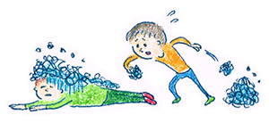

10 : 妄想を手放し現実的に考える
・妄想を手放し現実的に考える

前回はどのような認知をしていて
どのように感じているか
をわけるチャレンジをしました。 皆さんはいかがでしたでしょうか？ うまく分けることができましたか。
今回は新しいステップとして 別の可能性を現実的に考える練習をしていきます。
皆さんはコミュニケーションにおいて、以下のような認知（考え方）をすることはありますか？
・ 私は飲み会に出るといつも話せない
・ 相手がつまらそうにしていた、僕のことが嫌いなのか？
・ 私は友人が少なく、孤独だ
こういった認知は結構してしまうものですよね。 特に何かマイナスのことがあったとき人間はパニックになってしまい、感情が不安定になるなんてことがよくあります。
このとき助けになるのが「別の可能性を現実的に考えてみる」という習慣です。現実的に考えてみるとは、自分の考えが勝手な自分の思い込みでないか？別の可能性も考えてみるという習慣です。
・練習問題
こんな練習をしてみましょう。 認知行動療法では「反駁練習」と言ったりします。
1.まずは最初の認知
まずはじめに、以下の事例がある場合にどのような認知と感情を考えてみましょう。
「高校時代に仲が良かった友人を食事に誘ったが、3日間メールの返信がこない」
認知
感情
2.次に、自分の解釈とは別の他にも考えられる現実的な可能性を挙げてみましょう！
例）
他に考えられる現実的な可能性
・ 仕事中で携帯が見られないのかもしれない。
・ 体調不良でメールの返信ができなかった。
・ 電波の届かない場所にいる。
みなさんも一緒に考えてみましょう！
他に考えらる現実的な可能性
・現実的に考えると対応が柔軟に
いかがでしたでしょうか？
うまく別の可能性を考えることができましたか？
例えば私の友人には、あまりメールが好きじゃないのでメールより電話で連絡して欲しいという人もいます。
現実的に考えてその可能性を思い出せたら・・・しめたものです。 Ａさんには電話で伝えようと現実的に対応することができます。
もし、別の可能性を考えずに「やっぱり自分は嫌われている。」と認知してしまったら、 もしかしたら相手に対して敵意をもってしまって友人関係がギクシャクしてしまうなんてこともあるかもいしれません。
・現実的に考えないと認知は暴走する
私たちのコミュニケーションの間違いは、多くの場合、現実離れした考えから起こっています。
認知は放っておくとどんどん悪い方向に向かってしまい、証拠もないのに非現実的な考え方をしていきます。
それが現実的なものであれば仕方がない面もあるのですが、いったん立ち止まって、それが現実的なのかな？ 別の可能性はないかな？と考える姿勢はとても大事です。
認知行動療法の2つ目のポイントとして、別の可能性を現実的に考えるという視点を大事にしてみてくださいね♪
 |
|